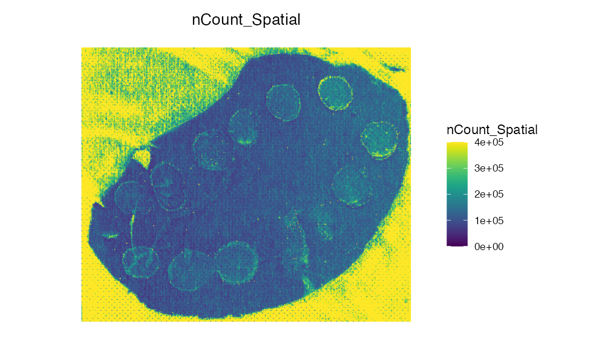
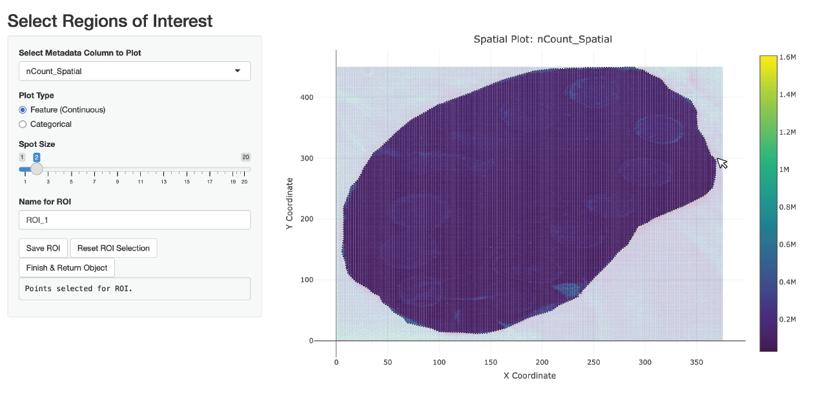
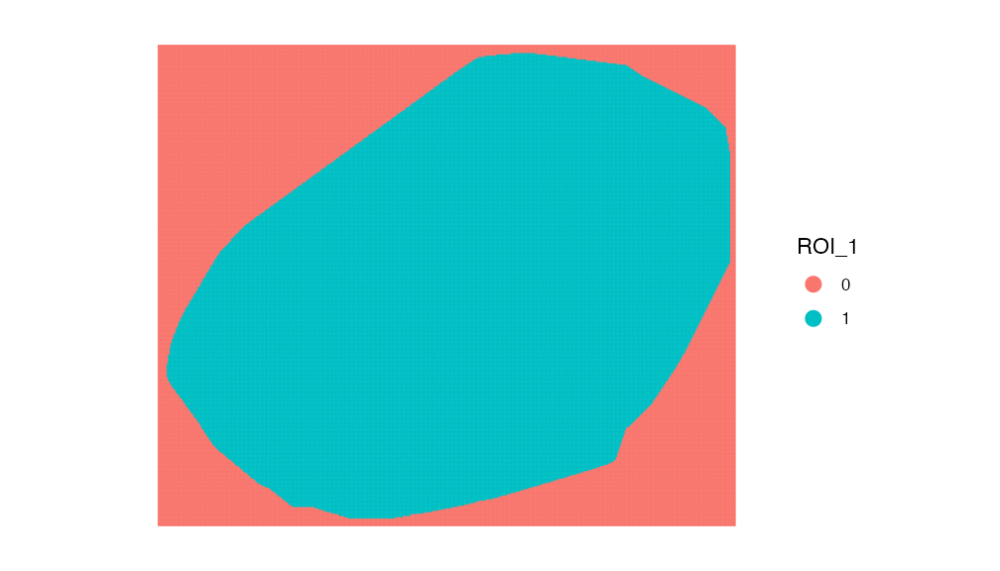

Handling Large SM Datasets
SpaMTP is suitable for datasets of all sizes. However, extra large datasets may need special handling to speed up the analysis process. To demonstrate some helpful functions for processing large datasets we will use a public mouse liver dataset with spotted chemicals standards published here.
Author: Andrew Causer
Import R Libraries and Load Data
First we need to import the required libraries for this analysis.
## Install SpaMTP if not previously installed
if (!require("SpaMTP"))
devtools::install_github("GenomicsMachineLearning/SpaMTP")
#General Libraries
library(SpaMTP)
library(Cardinal)
library(Seurat)
library(dplyr)
#For plotting + DE plots
library(ggplot2)
library(EnhancedVolcano)
library(viridis)Next we will load the data, you can download or load it directly from the SpaMTP zenodo page.
spotted_large <- Cardinal::readImzML("./Spotted/2020-12-05_ME_X190_L1_Spotted_20umss_375x450_33at_DAN_Neg",resolution = 3, mass.range = c(100,1000), memory = T)
spotted_largeMSImagingExperiment with 767528 features and 168750 spectra
spectraData(1): intensity
featureData(1): mz
pixelData(3): x, y, run
coord(2): x = 1...375, y = 1...450
runNames(1): 2020-12-05_ME_X190_L1_Spotted_20umss_375x450_33at_DAN_Neg
experimentData(8): spectrumType, instrumentModel, ionSource, ..., scanPattern, scanType, lineScanDirection
mass range: 100.0000 to 999.9959
centroided: NA You can see our dataset has 767,529 features and 168,750 pixels. This is quite a large dataset that will require alot of memory to process. However, it is likely we don’t need to analyse all the features and pixels to generate meaningful biological conclusion.
Annotating Large Datasets
Using the function AnnotateBigData we can find m/z
values that were successfully annotated and only perform the remainder
of the downstream analyses using these.
## Get all the m/z values from our cardinal object
mzs <- data.frame(Cardinal::featureData(spotted_large))$mz
## Annotate each m/z value
results <- AnnotateBigData(mzs, db = HMDB_db, ppm_error = 3, adducts = c("M-H", "M+Cl"), polarity = "negative")
dim(results)[1][1] 67060We can now see we successfully annotated 67,060 different m/z values which will reduce our dataset size by up to ~11.5x.
Lets look at the annoated results:
head(results, n = 5)| observed_mz | all_IsomerNames | all_Isomers | all_Isomers_IDs | all_Adducts | all_Formulas | all_Errors | mz_names | present |
|---|---|---|---|---|---|---|---|---|
| 100.0039 | 2,4-Oxazolidinedione; hydroxyoxazolone | HMDB0245467; HMDB0253283 | hmdb:HMDB0245467; hmdb:HMDB0253283 | M-H | C3H3NO3 | 1.1688 | mz-100.003900076051 | TRUE |
| 100.0042 | 2,4-Oxazolidinedione; hydroxyoxazolone | HMDB0245467; HMDB0253283 | hmdb:HMDB0245467; hmdb:HMDB0253283 | M-H | C3H3NO3 | 1.8312 | mz-100.004200088201 | TRUE |
| 100.0084 | Cyclopentadienyl | HMDB0250665 | hmdb:HMDB0250665 | M+Cl | C5H5 | 1.2680 | mz-100.00840035281 | TRUE |
| 100.0087 | Cyclopentadienyl | HMDB0250665 | hmdb:HMDB0250665 | M+Cl | C5H5 | 1.7320 | mz-100.008700378461 | TRUE |
| 100.0171 | (S)-methylmalonate-semialdehyde; acetoacetate | HMDB0304000; HMDB0304256 | hmdb:HMDB0304000; hmdb:HMDB0304256 | M-H | C4H5O3 | 0.4013 | mz-100.017101462133 | TRUE |
We can then use these m/z values to subset our results and then generate our SpaMTP Seurat object.
## Subset cardinal object
spotted_small <- Cardinal::subset(spotted_large, mz %in% results$observed_mz)
## Convert Cardinal object to SpaMTP object
spotted_small <- CardinalToSeurat(spotted_small)Region of Interest Selection
Now we have our filtered SpaMTP data object lets plot it.
ImageFeaturePlot(spotted_small, features = "nCount_Spatial", dark.background = F)& scale_fill_gradientn(colors = viridis::viridis(100), limits = c(0, 400000), na.value = viridis::viridis(100)[100])
We can see that there are alot of pixels outside the tissue section that are clearly noise with high intensity values. We could remove these using filtering methods, but for the purpose of demonstrating the built-in ROI selection tool, we can also use SpaMTP to manually select the region we wish to analyses.
Lets run this below and see an example of how to use this:
spotted_small <- SelectROIs(spotted_small)Here is an example of what the selection might look like:

| x_coord | y_coord | ROI_1 | |
|---|---|---|---|
| 1_1 | 1 | 1 | 0 |
| 2_1 | 2 | 1 | 0 |
| 3_1 | 3 | 1 | 0 |
| 4_1 | 4 | 1 | 0 |
| 5_1 | 5 | 1 | 0 |
| 6_1 | 6 | 1 | 0 |
| 7_1 | 7 | 1 | 0 |
| 8_1 | 8 | 1 | 0 |
| 9_1 | 9 | 1 | 0 |
| 10_1 | 10 | 1 | 0 |
Looking at the last 3 columns we can see our saved ROI selection area. Lets plot it visually:
ImageDimPlot(spotted_small, group.by = "ROI_1", dark.background = F)
Now we can simply subset our dataset:
spotted_small <- subset(spotted_small, subset = ROI_1 == "1")
ImageFeaturePlot(spotted_small, features = "nCount_Spatial", dark.background = F)& scale_fill_gradientn(colors = viridis::viridis(100), limits = c(0, 400000), na.value = viridis::viridis(100)[100])Session Info
## R version 4.4.1 (2024-06-14)
## Platform: aarch64-apple-darwin20
## Running under: macOS 15.5
##
## Matrix products: default
## BLAS: /Library/Frameworks/R.framework/Versions/4.4-arm64/Resources/lib/libRblas.0.dylib
## LAPACK: /Library/Frameworks/R.framework/Versions/4.4-arm64/Resources/lib/libRlapack.dylib; LAPACK version 3.12.0
##
## locale:
## [1] en_US.UTF-8/en_US.UTF-8/en_US.UTF-8/C/en_US.UTF-8/en_US.UTF-8
##
## time zone: Europe/Dublin
## tzcode source: internal
##
## attached base packages:
## [1] stats4 stats graphics grDevices utils datasets methods
## [8] base
##
## other attached packages:
## [1] kableExtra_1.4.0 knitr_1.50 viridis_0.6.5
## [4] viridisLite_0.4.2 EnhancedVolcano_1.24.0 ggrepel_0.9.6
## [7] ggplot2_4.0.0 dplyr_1.1.4 Seurat_5.3.0
## [10] SeuratObject_5.2.0 sp_2.2-0 Cardinal_3.8.3
## [13] S4Vectors_0.44.0 ProtGenerics_1.38.0 BiocGenerics_0.52.0
## [16] BiocParallel_1.40.2 SpaMTP_1.1.0
##
## loaded via a namespace (and not attached):
## [1] RColorBrewer_1.1-3 rstudioapi_0.17.1 jsonlite_2.0.0
## [4] magrittr_2.0.4 spatstat.utils_3.2-0 farver_2.1.2
## [7] rmarkdown_2.29 fs_1.6.6 ragg_1.5.0
## [10] vctrs_0.6.5 ROCR_1.0-11 spatstat.explore_3.5-3
## [13] RCurl_1.98-1.17 htmltools_0.5.8.1 sass_0.4.10
## [16] sctransform_0.4.2 parallelly_1.45.1 KernSmooth_2.23-26
## [19] bslib_0.9.0 htmlwidgets_1.6.4 desc_1.4.3
## [22] ica_1.0-3 plyr_1.8.9 plotly_4.11.0
## [25] zoo_1.8-14 cachem_1.1.0 igraph_2.1.4
## [28] mime_0.13 lifecycle_1.0.4 pkgconfig_2.0.3
## [31] Matrix_1.7-4 R6_2.6.1 fastmap_1.2.0
## [34] fitdistrplus_1.2-4 future_1.67.0 shiny_1.11.1
## [37] digest_0.6.37 patchwork_1.3.2 tensor_1.5.1
## [40] RSpectra_0.16-2 irlba_2.3.5.1 textshaping_1.0.3
## [43] labeling_0.4.3 progressr_0.16.0 spatstat.sparse_3.1-0
## [46] httr_1.4.7 polyclip_1.10-7 abind_1.4-8
## [49] compiler_4.4.1 proxy_0.4-27 withr_3.0.2
## [52] S7_0.2.0 tiff_0.1-12 DBI_1.2.3
## [55] fastDummies_1.7.5 MASS_7.3-65 classInt_0.4-11
## [58] units_0.8-7 tools_4.4.1 lmtest_0.9-40
## [61] httpuv_1.6.16 future.apply_1.20.0 goftest_1.2-3
## [64] glue_1.8.0 nlme_3.1-168 EBImage_4.48.0
## [67] promises_1.3.3 sf_1.0-21 grid_4.4.1
## [70] Rtsne_0.17 cluster_2.1.8.1 reshape2_1.4.4
## [73] generics_0.1.4 gtable_0.3.6 spatstat.data_3.1-8
## [76] class_7.3-23 tidyr_1.3.1 data.table_1.17.8
## [79] xml2_1.4.0 spatstat.geom_3.6-0 RcppAnnoy_0.0.22
## [82] RANN_2.6.2 pillar_1.11.1 stringr_1.5.2
## [85] spam_2.11-1 RcppHNSW_0.6.0 limma_3.62.2
## [88] later_1.4.4 splines_4.4.1 lattice_0.22-7
## [91] survival_3.8-3 deldir_2.0-4 tidyselect_1.2.1
## [94] CardinalIO_1.4.0 locfit_1.5-9.12 miniUI_0.1.2
## [97] pbapply_1.7-4 gridExtra_2.3 matter_2.8.0
## [100] svglite_2.2.1 scattermore_1.2 xfun_0.53
## [103] Biobase_2.66.0 statmod_1.5.0 matrixStats_1.5.0
## [106] fftwtools_0.9-11 stringi_1.8.7 lazyeval_0.2.2
## [109] yaml_2.3.10 evaluate_1.0.5 codetools_0.2-20
## [112] tibble_3.3.0 cli_3.6.5 ontologyIndex_2.12
## [115] uwot_0.2.3 xtable_1.8-4 reticulate_1.43.0
## [118] systemfonts_1.2.3 jquerylib_0.1.4 Rcpp_1.1.0
## [121] globals_0.18.0 spatstat.random_3.4-2 zeallot_0.2.0
## [124] png_0.1-8 spatstat.univar_3.1-4 parallel_4.4.1
## [127] pkgdown_2.1.3 dotCall64_1.2 jpeg_0.1-11
## [130] bitops_1.0-9 listenv_0.9.1 e1071_1.7-16
## [133] scales_1.4.0 ggridges_0.5.7 purrr_1.1.0
## [136] rlang_1.1.6 cowplot_1.2.0 shinyjs_2.1.0